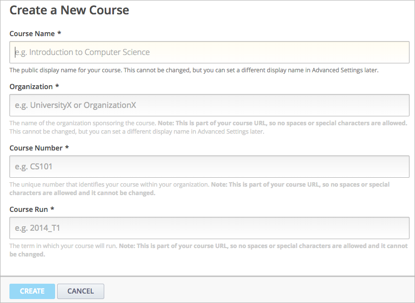
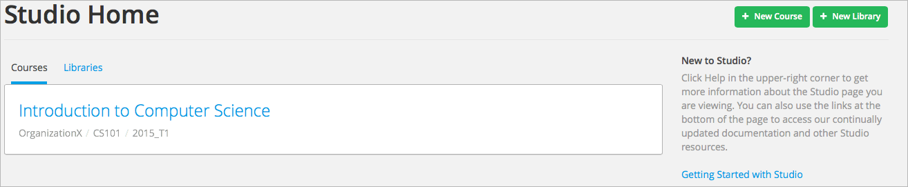
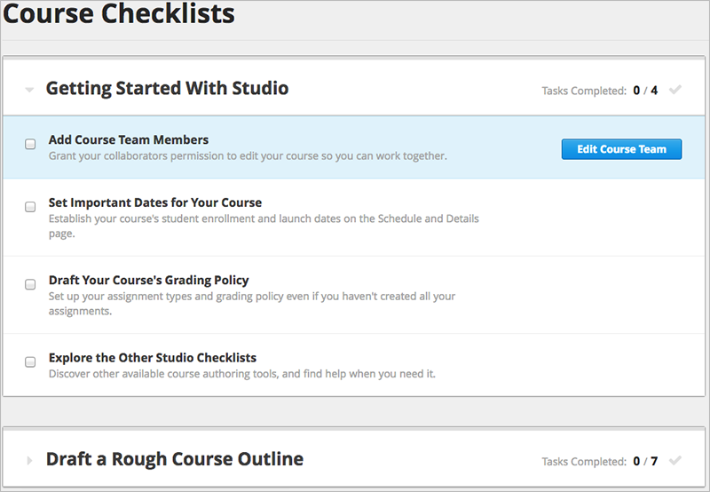

本章描述如何使用Studio创建和安排课程。
另一种创建课程的方式是重开现有课程，详情参阅:ref:Rerun a Course.
您也可以通过Studio 输出课程 和 导入课程 。 你需要使用可扩展标记语言（XML）编辑课程时，就可以这样做。
Note
小心输入新课程信息。信息会成为你课程域名（URL）的一部分。 若欲在课程创建之后改变课程域名（URL）的话，你必须联系edX管理人员协助处理， 相关信息请参考http://help.edge.edx.org 此外，由于信息会成为课程课程域名（URL）的一部分， 所以以下四个方面的字元总数是少于或等于65。
请于课程名称栏输入 课程标题 。例如，名字为“Sets, Maps and Symmetry Groups”。若课程名称是英文，课程标题首字母要大写。
请于 组织名称 栏输入您大学的名称。 不要包含空格键和特殊的字符。
请于 课程编码 栏输入课程英文缩写和课程代码。 例如，编号为207的公共卫生课程，就输入 PH207 。 编号101x的为数学课程，就输入 Math101x 。 不要包含空格键和特殊字符。
Note
如果您的课程将对全球开放的话，请于课程编号后要输入 “x”。 相反，如果课程只是针对学校范围内开放的话，请不要在课程编号后输入“x”。*
就 课程运作 而言，输入能让课程运行的术语。 例如，输入2014SOND 或 T2_2014。 不要包含空格键和特殊的字符。
输入的课程运作的日期不影响默认课程开始日期。查看课程设置重要日期以便获取更多信息。 查看课程设置重要日期以便获取更多信息。 设置开始和结束日期.
之后你只看到课程大纲。
创建新课程时，Studio会自动打开课程，之后您就可以开始编辑了。
如果您之后再次使用Studio，Studio登录页面会显示您的课程信息。
打开课程，单击课程名称。你将进入在线课程。
通过创建课程任务，您能在Studio的帮助下使用课程核对清单以完成工作任务。
课程核对清单包括以下几类：
从 工具栏 中选定 核对清单。
正如上图所显示的增添课程小组人员任务一样，如果你将鼠标悬停在某个任务上的话，就会出现一个能帮你完成任务的页面按钮。
根据你的需要，可以展开和收起本页面部分内容。
完成任务之后你能进行检查。Studio会自动保存改动部分。其他课程学习人员也能看见你改动的部分。
课程小组成员指的是能帮你创建课程的用户。 添加或删除课程小组成员，或赋予其他小组成员管理权限之前，请先确保：
除了添加和删除其他小组新成员以及赋予他们管理权限之外，其他小组成员能编辑课程和操作所有任务。
Note
任何一个课程小组成员都能删除其他小组成员创建的内容。
添加课程小组成员：
新小组成员现在可以参与课程工作了。
在学习管理系统下工作时，你也能让用户享受些特权。
Note
学习管理系统中的“课程员工”角色与Studio中的“员工”角色相同， 学习管理系统中的“导师”角色与Studio中的“管理员”角色相同。
无论赋予谁特权，小组管理成员能在学习管理系统和Studio下完成课程。 课程运作过程中，分配角色的详情，请见人员配置。 安置职工.
您也可以指定小组来测试课程以及分派学习管理系统角色参与和管理讨论区。 测试小组和讨论区管理员必须登记参与您的课程，但是他们不需要拥有员工或管理员权限。 详情请参阅 贝塔测试 和 安排讨论项目管理职能。
{kind=link}
{kind=link}
{kind=link}